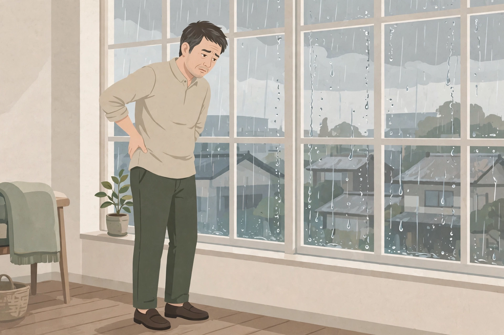

東三国で雨の日に気になる腰の重さ｜男性の低気圧の日の過ごし方とセルフケア、受診の目安
男性の低気圧の日の過ごし方とセルフケア、受診の目安

「晴れている日は平気なのに、雨が降り出す前や低気圧の日になると腰が重だるく感じる」「立ち上がるときに、腰の重さを意識することが増えた」「雨の日は一日中、腰のあたりがすっきりしない気がする」。東三国や新大阪、淀川区周辺で働く男性から、雨の日にまつわるこうした声を聞くことがあります。雨の日の腰の重さの感じ方や背景は人によって異なり、一つの原因だけで説明できるものではありません。この記事では原因を断定するのではなく、雨の日に気になる腰の重さについての一般的な考え方と、考えられる要因、低気圧の日の過ごし方と日常で試せるセルフケア、医療機関に相談したほうがよい目安をまとめます。同じ雨の日の場面でも体のだるさに絞った雨の日の体のだるさについてのコラムや、肩こりに絞った雨の日の肩こりについてのコラム、起き抜けの場面に絞った朝に気になる腰の重さについてのコラム、年代に絞った40代の腰の重さについてのコラムや50代の腰の重さについてのコラムとは視点を分け、ここでは「雨の日・低気圧の日」という天気と「腰の重さ」に焦点を当てます。お悩み別のページでも腰の重さや慢性腰痛としてまとめています。
雨の日の腰の重さとは：天気が崩れる日に表れやすい腰の重だるさ
一般に「腰が重い」と呼ばれる感覚は、腰全体が重だるく感じる、立ち上がるときに腰のあたりがすっきりしない、長時間座ったあとに腰の奥が張るように感じる、などとして自覚されることが多いとされています。雨の日や低気圧の日は、「晴れの日は平気なのに、雨の前日や雨の日に限って腰の重さを感じる」「台風が近づく日に腰のあたりが重く感じる」「梅雨の時期は、腰の重さを感じる日が増えた気がする」というように、天気の崩れと重なって自覚する方がいます。出方も「朝に強く、日中は楽になる」「夕方から夜に重くなる」「一日中すっきりしない」など人それぞれです。まずは「どんな天気や気温の日に、どんな時間帯に、どんな感覚があるか」「晴れている日と比べて何が違うか」を自分の言葉で整理しておくと、その日の過ごし方の見直しやセルフケアの選び方、専門家に相談するときの伝え方がスムーズになります。腰の重さとあわせて、体のだるさや肩の張り、眠りの浅さを感じる場合もあり、その日の過ごし方全体を振り返ってみることも一つの手がかりになります。
考えられる要因の整理
雨の日に腰の重さを意識する背景には、天気の崩れに伴う気圧や湿度の変化に、雨の日の外出の減りや姿勢、服装や室内環境などが重なっている場合があります。以下は代表的なものとして挙げられる要因ですが、当てはまるかどうかや程度は人によって異なります。
腰の重さと重なって自覚されやすい部位の位置は、図1のとおりです。

雨の日の腰の重さも、腰そのものだけでなく、仙腸関節のあたりや臀部、太ももの裏側の張りと重なって自覚されることが多いとされます。立ち座りの動きが多い日は、腰まわりにも力が入りやすくなります。位置は目安です。
- 気圧の変化と、天気の崩れの前後の感じ方：低気圧が近づく日や、晴れと崩れが短い間隔で入れ替わる日は、気圧の変化が大きくなることがあります。天気の変わり目に腰の重さや体のだるさを自覚する方もいますが、感じ方には個人差が大きく、天気だけが要因とは限りません。自分の感覚と天気を照らし合わせて記録しておくと、感じ方の傾向を振り返る材料になります。
- 雨の日の湿度と、冷えを感じやすい服装・室内環境：雨の日は湿度が高くなり、濡れた服や靴で体が冷えやすくなる場合があります。冷たい雨に当たった日や、冷房の風が当たる室内で濡れたまま過ごした日は、腰まわりの冷えを意識しやすくなると話す方もいます。服装や室内の温度・湿度の見直しは、雨の日の過ごし方の一つです。
- 雨の日の外出の減りと、座りっぱなしの時間の長さ：雨の日は外出を控え、室内で座って過ごす時間が長くなりがちです。同じ姿勢で座り続ける時間が長いと、腰まわりの張りを意識しやすくなる場合があります。在宅の日や雨の日の休日は、立ち上がる回数が減りやすい点も、振り返りの材料になります。
- 傘を持つ姿勢と、片側に偏った荷物の持ち方：雨の日は傘を差し、片手がふさがった状態で歩くことが増えます。傘を持つ側の肩が上がったまま歩いたり、荷物をいつも同じ側の手や肩で持ったりする姿勢が続くと、体の片側に負担が偏り、腰まわりの張りと重なって感じられる場合があります。
- 気圧の変化と、睡眠の浅さ・疲労感の重なり：天気が崩れる日は、眠りが浅くなったり、疲労感が残りやすくなったりする方もいます。睡眠時間が短い日や、仕事の疲れが残っている日は、腰の重さを感じやすくなると話す方もいます。天気の崩れと睡眠、疲労感が重なって自覚される場合もあります。
- 腰まわりの筋肉の張りと、もともとの腰の状態：腰まわりの筋肉の張りや、もともと腰の重さを感じやすい状態がある方は、雨の日にその感じ方が強まる場合があります。デスクワークや立ち仕事など、ふだんの姿勢や動き方の積み重ねが、天気の崩れの日に表れやすくなると話す方もいます。
- 体そのものの側の要因の可能性：腰の重さや痛みの背景には、椎間板ヘルニアや脊柱管の狭窄、内臓の状態など、体の側の要因が関わる場合もあります。「雨の日だから」と決めつけないことは、受診の目安とあわせて押さえておきたい点です。
低気圧の日の過ごし方と、日常で試せるセルフケア
雨の日や低気圧の日に、日常の中で無理なく取り入れやすいものを中心にまとめました。強い力で押したり、腰を急にひねったりはせず、痛みやしびれなど様子の変化があるときは無理をしないでください。気になる様子が強いときは、セルフケアより先に医療機関への相談をご検討ください。
- 天気予報で雨の日を先に知り、予定を詰め込みすぎない：前日のうちに翌日の天気や気圧の変化を確認しておき、雨の日や天気が崩れる日は、予定を詰め込みすぎない、早めに休む、といった備え方です。自分の感覚と天気を照らし合わせる記録代わりにもなります。
- 室内で腰まわりをゆっくり動かす：雨で外に出にくい日は、室内で仰向けになり、両膝を抱えてゆっくり胸に近づける動き（手順は図2）や、腰を左右に小さく動かすなど、無理のない範囲で体を動かす工夫です。呼吸を止めず、痛みを感じる方向には無理に動かさないでください。
- 蒸しタオルや湯船で腰まわりを温める：夕方や入浴のついでに、温かい蒸しタオルを腰に数分当てる、ぬるめのお湯に短時間からでも浸かる、といった温め方の見直しです。熱すぎない温度で、気持ちよいと感じる範囲にとどめてください。のぼせやすい方は、長湯を避け、水分をとりながら行ってください。
- 座りっぱなしを避け、こまめに立ち上がる：室内で過ごす時間が長い雨の日は、30分から1時間に一度は立ち上がり、腰を軽く伸ばしたり、部屋の中を少し歩いたりする区切りを入れる工夫です。座る姿勢では、背もたれに深く腰かける、足裏が床につく高さにする、といった椅子の見直しもあわせて行う方もいます。
- 傘と荷物の持ち方を見直す：傘を持つ手を途中で替えたり、荷物をリュックに替えたり、重い荷物を両手に分けたりして、片側への偏りを減らす工夫です。雨の日の移動では、滑りやすい足元にも気をつけ、急いで歩かないことも、腰まわりへの負担の見直しの一つです。
- 寝具とパジャマで、雨の夜の冷えに備える：雨の夜は、掛け布団やパジャマを気温や湿度に合わせて選び、明け方の冷え込みに備えて一枚羽織れるものを枕元に置く、といった備えです。夜中に暑さや寒さで目が覚める日が続くときは、寝具の切り替えの合図になります。
- 腰を反らしすぎず、呼吸を止めない：立ち上がるときや物を持ち上げるときは、腰を反らす動きを避け、膝を曲げて体の近くで持つ、呼吸を止めずにゆっくり動く、といった動き方の見直しです。重い物を持ち上げるときは、無理をせず、周りの人に声をかけることも一つの選択肢です。

①仰向けになり、両膝を曲げて胸のほうへゆっくり近づける ②両手で膝を軽く抱え、そのまま数回ゆっくり呼吸する ③膝をゆっくり下ろし、元の姿勢に戻る、が基本の流れです。痛みやしびれを感じるときは、無理をせず中止してください。
セルフケアは一度に全部をやろうとせず、その日の天気や体調に合わせて続けられそうなものを一つ選ぶところから始めるのがおすすめです。感じ方には個人差があり、その週の仕事内容や睡眠、天気が崩れる頻度によっても変わりますので、無理のない範囲で行ってください。市販薬などを使う場合は、用法・用量や対象を商品の表示で確認し、頼る日が長く続くときは専門家への相談もご検討ください。
医療機関への受診を考える目安
次のような様子がある場合は、セルフケアや当院でのケアの前に、整形外科などの医療機関への相談をご検討ください。当院は医療機関ではなく、症状の診断や治療は行いません。「雨の日だから」と思っていても、背景にほかの原因が関わる場合があります。特に、今までにない痛みや、ほかの症状を伴う場合は、天候にかかわらず早めの相談が大切です。
- 足のしびれや脱力感、足に力が入りにくい様子を伴う
- 排尿や排便の様子に変化がある、尿が出にくい
- 発熱や、理由の分からない体重の変化を伴う
- 転んだり腰を打ったりしたあとから、腰の痛みが続いている
- 夜間に目が覚めるほどの痛みがある、安静にしていても痛みが続く
- セルフケアや過ごし方の見直しを続けても数週間以上様子が変わらない、日に日に強くなっている
上記に当てはまらなくても、気になる様子が続くときは、早めに医療機関や専門家へ相談することが大切です。自己判断だけで様子を見続けないことも一つの目安になります。
北辰堂のご案内
北辰堂は、大阪市淀川区東三国二丁目にある男性専用の整体院です。施術歴30年の平賀伸人（鍼灸師・国家資格）が、整体とリラクゼーションを行います。当院では鍼灸施術は行いません。営業は平日・土曜17:00〜22:00、日曜10:00〜22:00の完全予約制です。雨の日に腰の重さが気になる方は、仕事帰りの平日・土曜の夕方や、日曜の時間帯に、その日の天気や過ごし方も含めてご相談いただけます。プライバシーへの配慮のため、詳しい住所はご予約確定後にLINEでご案内します。
料金は60分 初回2,000円／2回目以降6,000円、90分 初回3,000円／2回目以降9,000円で、お支払いは現金のみです。施術を受けたからといって体の状態がどうなるかをお約束することはできませんが、その日の体の状態を確認しながら、腰の重さだけでなく首や肩、姿勢全体の様子も見て、ゆっくり体を預けられる時間をご用意しています。雨の日の過ごし方や傘・荷物の持ち方など、日常で気になっていることも、カウンセリングの際にお聞かせください。気になるお悩みの例はお悩み別一覧にもまとめています。
コースの内容はメニュー・料金、施術者は施術者について、ご予約の流れは当日の流れとLINE予約の下書きづくり、場所についてはアクセスをご覧ください。あわせて雨の日の体のだるさについてのコラムや雨の日の肩こりについてのコラム、朝に気になる腰の重さについてのコラム、疲労感と腰の重さについてのコラム、よくある質問もご参考ください。
ほかのコラム記事
関連するお悩みページ
ご予約・ご相談はLINEから
東三国・新大阪・淀川区周辺で、体のケアの相談先をお探しの方は、LINE公式アカウント（北辰堂）からお気軽にご連絡ください。現在の状態をお聞きしたうえで、施術の進め方をご案内します。
LINEで予約する